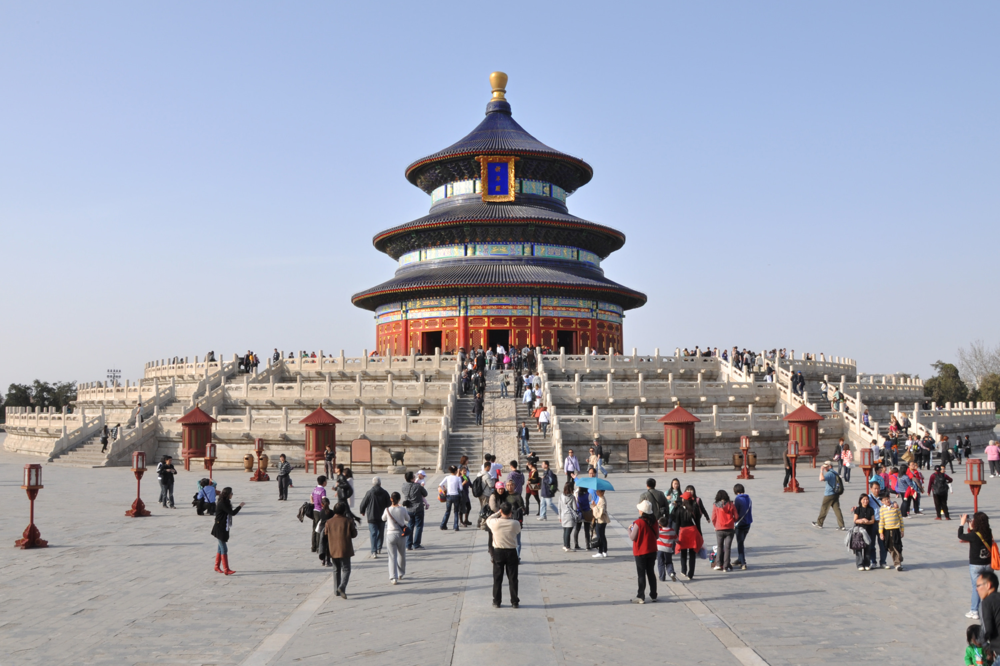

Beijing: The Heart of China

Beijing stands as a symbol of China's rich imperial past and its dynamic present. Historically, it served as the political and cultural center for various dynasties, with the Forbidden City exemplifying its imperial grandeur. In contemporary times, Beijing has transformed into a bustling metropolis, playing a central role in China's rapid economic growth and modernization. The city's blend of ancient heritage and modern development offers a unique perspective on China's journey through history.
Beijing's historical significance is evident in its well-preserved ancient structures and its role as a political center. The Forbidden City, once the imperial palace, now serves as a museum complex showcasing China's dynastic history. The Temple of Heaven and the Summer Palace further exemplify the city's rich architectural and cultural heritage. In recent decades, Beijing has undergone rapid modernization, hosting the 2008 Summer Olympics and emerging as a global hub for politics, culture, and innovation. This juxtaposition of ancient tradition and modern development highlights Beijing's unique position in the world.